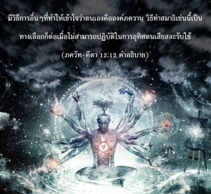
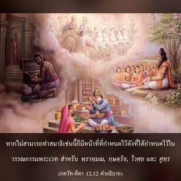
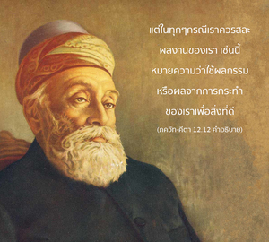

หากไม่สามารถปฏิบัติเช่นนี้ เธอก็ไปปฏิบัติเพื่อพัฒนาความรู้ อย่างไรก็ดีที่ดีกว่าความรู้คือ การทำสมาธิ และดีกว่าการทำสมาธิคือ การสละผลของงาน จากการเสียสละเช่นนี้เธอสามารถได้รับความสงบแห่งจิตใจ



ดังที่ได้กล่าวไว้ในโศลกก่อนหน้านี้มีการอุทิศตนเสียสละรับใช้สองวิธีคือ วิธีปฏิบัติตามหลักธรรม และวิธีการยึดมั่นในความรักต่อองค์ภควานฺโดยสมบูรณ์ สำหรับพวกที่ไม่สามารถปฏิบัติตามหลักธรรมในกฺฤษฺณจิตสำนึกโดยแท้จริง การไปพัฒนาความรู้จะดีกว่าเพราะว่าจากความรู้จะสามารถเข้าใจสถานภาพอันแท้จริงแล้วจะค่อยๆพัฒนาถึงจุดแห่งการทำสมาธิ และจากการทำสมาธิจะสามารถเข้าใจองค์ภควานฺโดยวิธีการที่ค่อยเป็นค่อยไป มีวิธีการอื่นๆที่ทำให้เข้าใจว่าตนเองคือองค์ภควานฺ วิธีทำสมาธิเช่นนี้เป็นทางเลือกก็ต่อเมื่อไม่สามารถปฏิบัติในการอุทิศตนเสียสละรับใช้ หากไม่สามารถทำสมาธิเช่นนี้ก็มีหน้าที่ที่กำหนดไว้ดังที่ได้กำหนดไว้ในวรรณกรรมพระเวท สำหรับ พฺราหฺมณ, กฺษตฺริย, ไวศฺย และ ศูทฺร ซึ่งจะพบในบทสุดท้ายของ ภควัท-คีตา แต่ในทุกๆกรณีเราควรสละผลงานของเรา เช่นนี้หมายความว่าใช้ผลกรรมหรือผลจากการกระทำของเราเพื่อสิ่งที่ดี
โดยสรุปก็คือ ในการบรรลุถึงองค์ภควานฺ ซึ่งเป็นจุดมุ่งหมายสูงสุดมีสองวิธี วิธีหนึ่งค่อยๆ พัฒนา และอีกวิธีหนึ่งโดยตรง การอุทิศตนเสียสละรับใช้ในกฺฤษฺณจิตสำนึกเป็นวิธีโดยตรง และวิธีอื่นๆ เกี่ยวกับการเสียสละผลแห่งกิจกรรมของตน จะสามารถมาถึงระดับแห่งความรู้ จากนั้นก็มาถึงระดับแห่งการทำสมาธิ จากนั้นมาถึงระดับแห่งการเข้าใจองค์อภิวิญญาณ และจากนั้นก็มาถึงระดับแห่งองค์ภควานฺ เราอาจปฏิบัติตามวิธีทีละขั้นตอน หรือปฏิบัติตามวิธีโดยตรง วิธีโดยตรงไม่ใช่ว่าทุกคนจะทำได้ ฉะนั้นวิธีทางอ้อมก็ดีเช่นกัน อย่างไรก็ดี ต้องเข้าใจว่าวิธีทางอ้อมไม่ได้แนะนำไว้สำหรับ อรฺชุน เพราะทรงอยู่ในระดับแห่งการอุทิศตนเสียสละรับใช้ด้วยความรักต่อองค์กฺฤษฺณเรียบร้อยแล้ว วิธีทางอ้อมจึงมีไว้สำหรับบุคคลอื่นๆ ที่ไม่ได้อยู่ในระดับนี้ สำหรับพวกนี้ควรปฏิบัติตามวิธีที่ค่อยเป็นค่อยไปในการเสียสละ ความรู้ การทำสมาธิและการรู้แจ้งถึงองค์อภิวิญญาณ และ พฺรหฺมนฺ แต่สำหรับ ภควัท-คีตา ได้เน้นวิธีโดยตรงทุกๆ คนได้รับคำแนะนำให้รับเอาวิธีโดยตรงมาปฏิบัติ และศิโรราบต่อองค์ภควานฺ ศฺรีกฺฤษฺณ